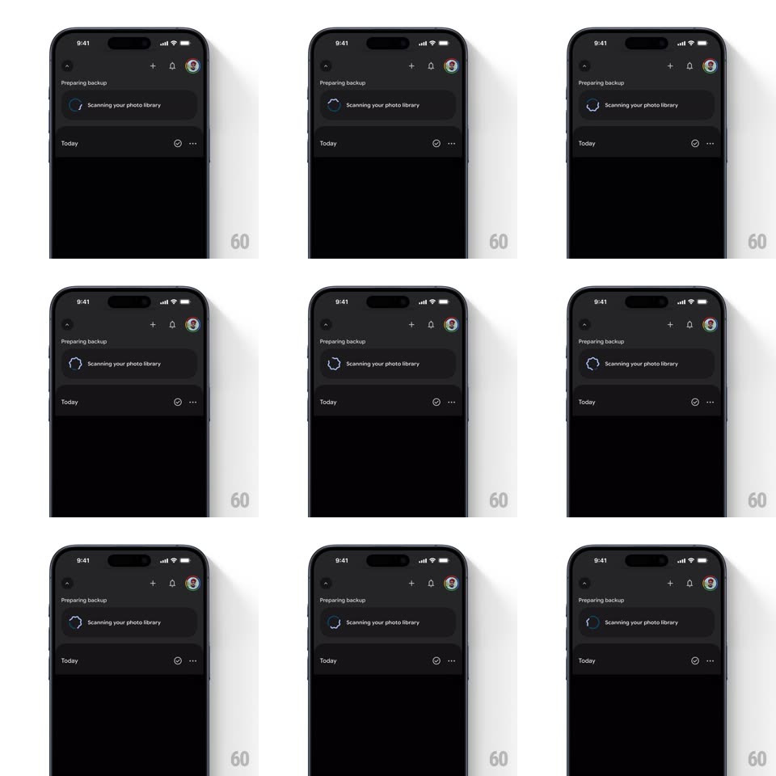

Media
Frame-by-frame

Rebuild this animation 1:1: Google Photos' backup scan indicator - a circular progress arc that spins continuously while its shape wiggles and morphs like a living blob.

Rebuild this animation 1:1: Google Photos' backup scan indicator - a circular progress arc that spins continuously while its shape wiggles and morphs like a living blob. ## Integration Integration: stack-agnostic spec - springs given as stiffness/damping, timed motions as duration + curve; map every value to your framework and animation library of choice. ## Scene Google Photos' dark library with a "Preparing backup" section under the header: a rounded card row holding the indicator and the label "Scanning your photo library", with the Today section below. ## Motion spec Pattern: indeterminate wiggly circular spinner, looping. - Spin: the arc rotates around its center continuously (~1.4s per revolution, linear). - Wiggle: the ring's radius modulates along its circumference (2-3 low-frequency lobes, amplitude ~6-8% of radius) so the circle breathes and deforms as it turns; the morph phase runs slower than the rotation (~3s cycle) so the shape never repeats in the same orientation. - Arc length breathes too: the visible arc grows and shrinks (90deg -> 270deg -> 90deg, ease-in-out, ~1.4s) in sync with the spin, like Material's indeterminate ring but organic. - Entry: the indicator fades and scales in (0.8 -> 1, 250ms) when the scan starts; on completion it sweeps into a check (arc closes to full ring, 300ms, then crossfades to the check, 200ms). ## Calibration - Rounded stroke caps; stroke width constant while the radius wiggles. - Rotation, arc breathing, and radius morph are independent loops with different periods so the motion feels non-repeating. ## Reduced motion A static three-quarter ring with a slow opacity pulse (1.6s). ## Don't miss - The wobble is radial morphing of the ring itself, not a wobble of the whole view. - It stays small and quiet - it lives inside the backup card, not fullscreen.